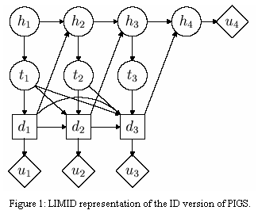
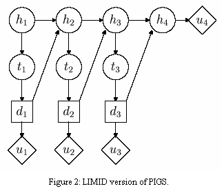

Influence Diagram and Limited Memory Influence Diagram overview | ||
|
Influence diagrams are compact representations of decision problems under uncertainty. We will observe diagrams of ‘no forgetting’, i.e. that values of observed variables and decisions that have been taken are remembered at all later times. Such diagrams we will call Influence Diagrams (ID). We will contrast them with LIMIDs (LImited Memory Influence Diagrams). Example 1 (PIGS)
The story now continues in two versions. In the traditional influence diagram (ID) version, the pig breeder will at all times know whether the pig has been treated earlier and also the previous test results. If we extend the story to continue for many months or to have weekly or daily examinations with potential injections associated, the complexity of finding an optimal treatment strategy becomes forbidding.  In the LIMID version of the story, the pig breeder does not keep individual records for his pigs and has to make his decision knowing only the test result for the given month and the age of the pig. The memory has been limited to the extreme of only remembering the present.  LIMIDs are represented by directed acyclic graphs (DAGs) with three types of nodes. Chance nodes, displayed as circles, represent random variables. Decision nodes, displayed as squares, correspond to alternative choices available to the decision maker. Finally value nodes, displayed as diamonds, represent additive components of the joint utility function. We assume that the joint utility of a configuration of the chance and decision variables can be represented as the sum of the local utility functions associated with the value nodes. A LIMID can be viewed as a special type of Bayesian network, where the state of each decision variable is to be imposed from the decision maker to meet an optimization objective, and where the variables at the value nodes are completely determined from its parent configurations. A LIMID differs from a traditional ID representation of a decision problem in two ways:
Thus, LIMIDs allow for multiple or forgetful decision makers. |